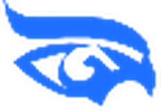
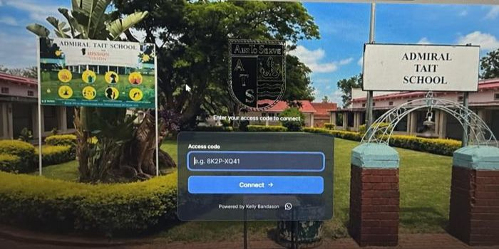

Network services
Plan, install and support the network your site depends on.

kelvasyPractise VLAN design and packet tracing in Kelvasy Labs.
Every connection. Part of a bigger picture.
Build your LAN and Wi-Fi, connect branches over private links, and get the tools to monitor and plan your network.
Explore Kelvasy
Plan, install and support the network your site depends on.
Monitor a live network or practise a design in a virtual lab.
Featured project
The school needed a recognisable sign-in page for its hotspot. Kelvasy designed a branded portal with a dedicated access screen.
Users see the school’s identity when they connect and can follow a clear sign-in flow.
Explore hotspot services
Network services
Manage network policy from a central place across supported gateways, switches and access points.
For a two-site rollout, each gateway routes traffic between networks. Managed switches and access points carry separate staff, guest and device VLANs.
Configuration depends on the selected controller and device models. Supported gear can receive centrally managed settings. Monitoring can include device health, traffic and topology where telemetry is available. Kelvasy checks compatibility during planning.
Explore SDN servicesKelvasy Console
Keep device inventory, site records, observed topology and available traffic readings together.
| Equipment | Site | Status |
|---|---|---|
| Gateway | Main office | Online |
| Managed switch | Main office | Online |
| Access point | Branch office | Online |
Kelvasy Labs
Build a virtual topology, assign IP addresses and VLANs, and trace how traffic moves between devices.
Example lab · Guest Wi-Fi
Place a router, switch and access point. Connect a guest client to the access point.
Put staff and guest devices on separate VLANs, then give each VLAN its own IP subnet.
Follow a packet from the guest client to its gateway. Check the expected path and access policy.
Contact